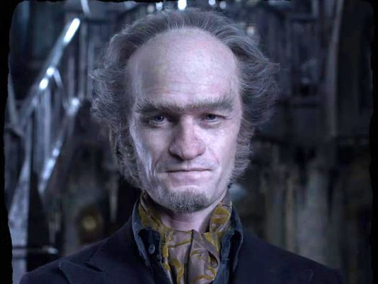

Mi hanno appena regalato una trottola di legno, ma l'ho mangiata! ;)
Il Conte avrà una sorpresina grazie alla mia nuova invenzione! Ahahah!
Questa è la brutta copia del mio cannocchiale speciale. #povery
https://it.wikipedia.org/wiki/Cannocchiale